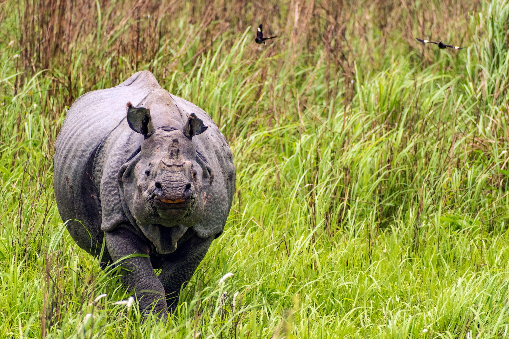
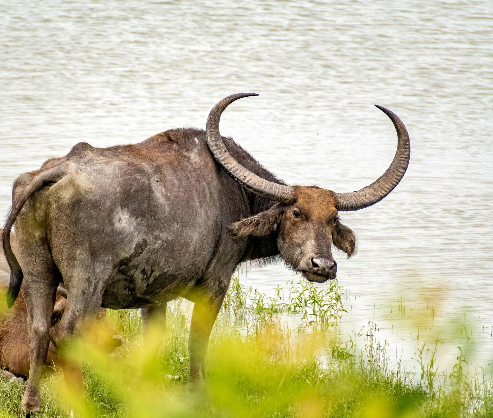
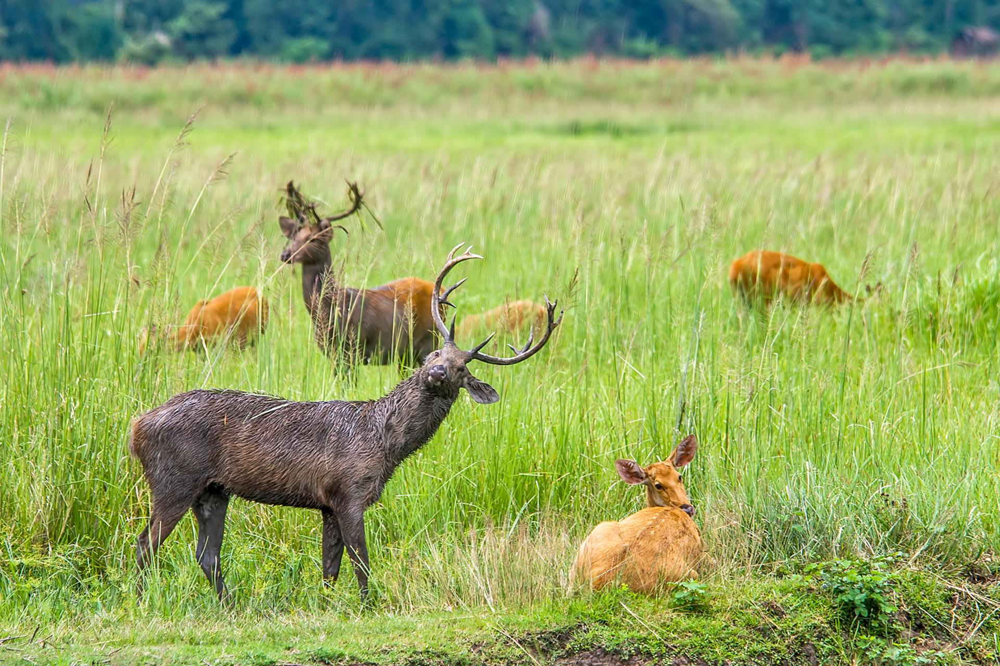
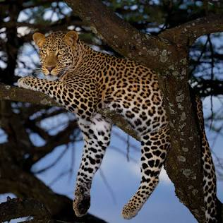
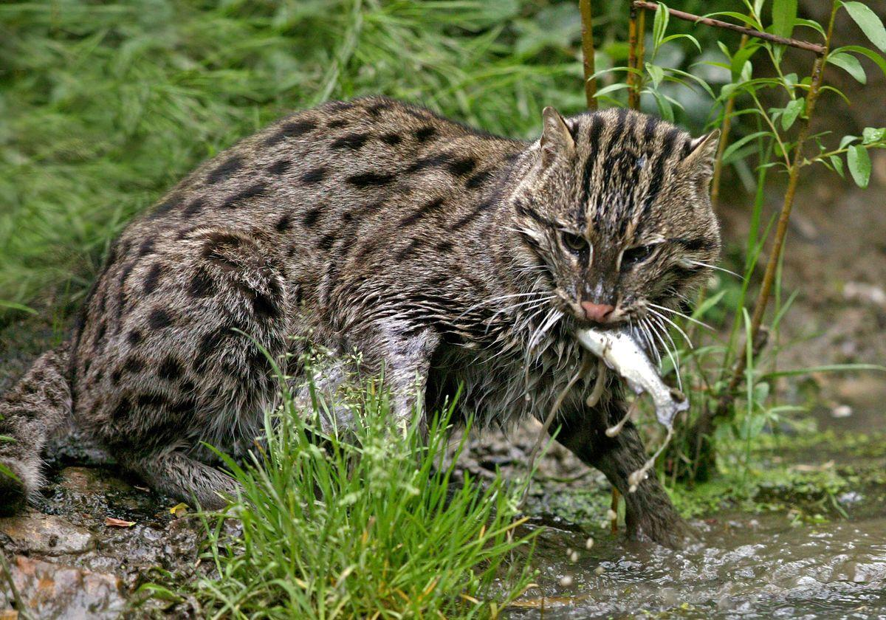
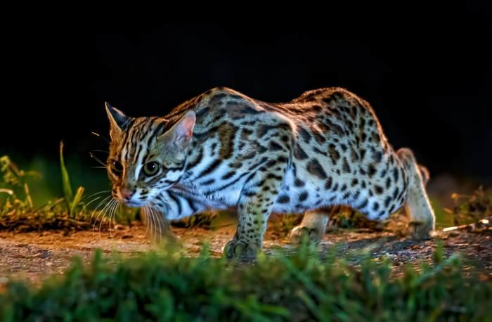
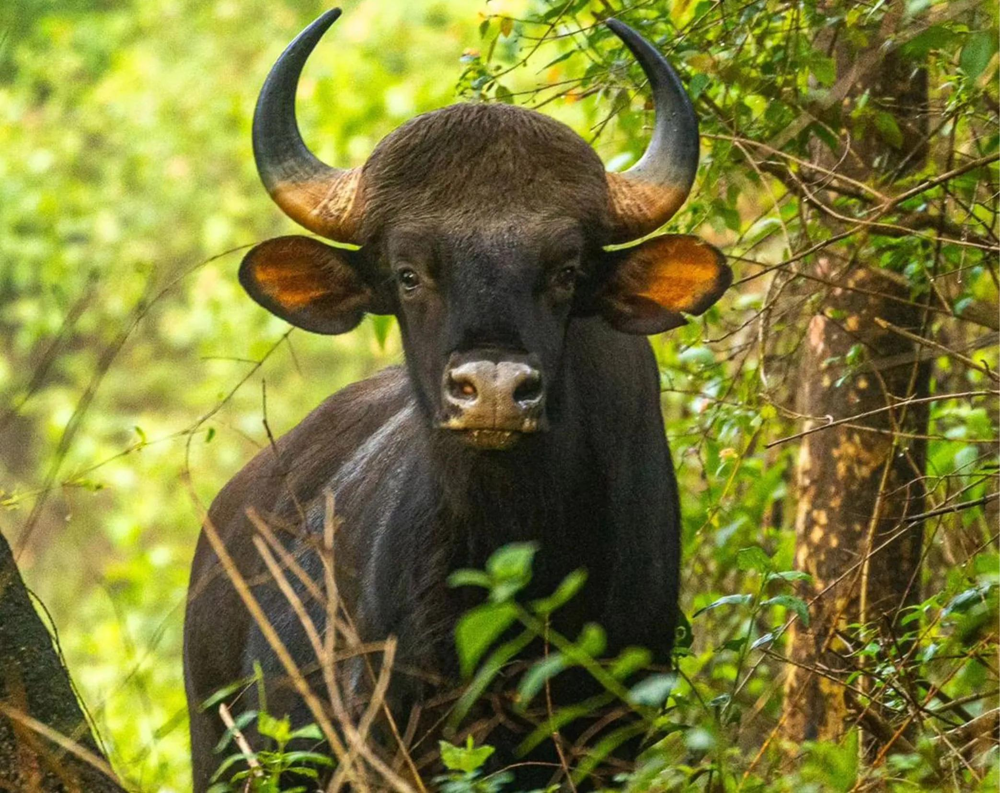
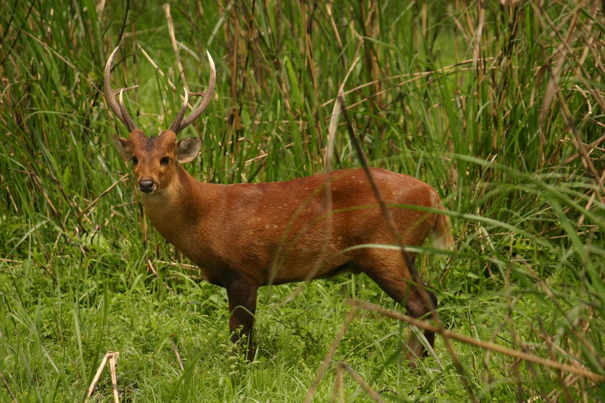
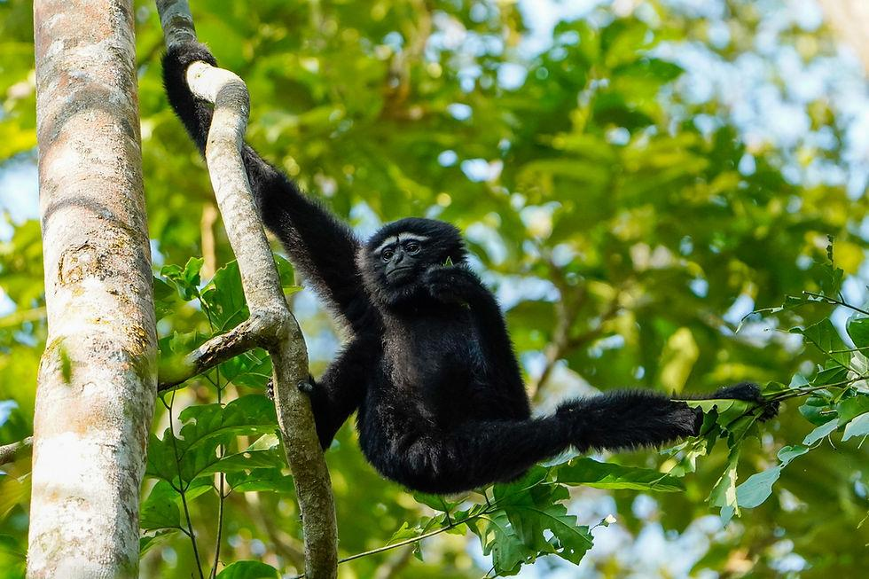
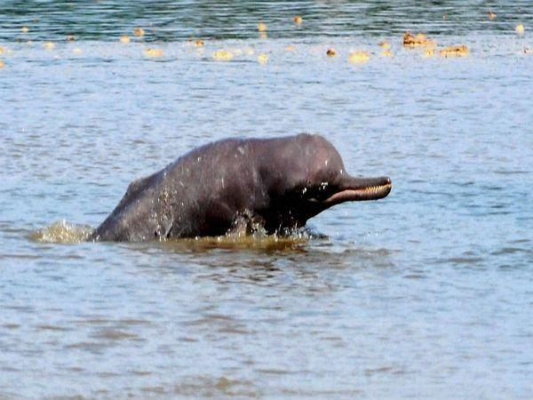

Animals You Can Spot @ Kaziranga
The “Big Five” share the park with wild cats, deer, primates and river wildlife.

Greater One-Horned Rhinoceros

Royal Bengal Tiger

Asian Elephant

Wild Water Buffalo

Eastern Swamp Deer

Leopard

Fishing Cat

Jungle Cat

Leopard Cat

Gaur

Sambar Deer

Hog Deer

Sloth Bear

Hoolock Gibbon

Capped Langur

Gangetic River Dolphin
Kaziranga has about 35 recorded mammal species and around 480 bird species, along with turtles, snakes, frogs and fish. Actual sightings depend on season, habitat and natural conditions.